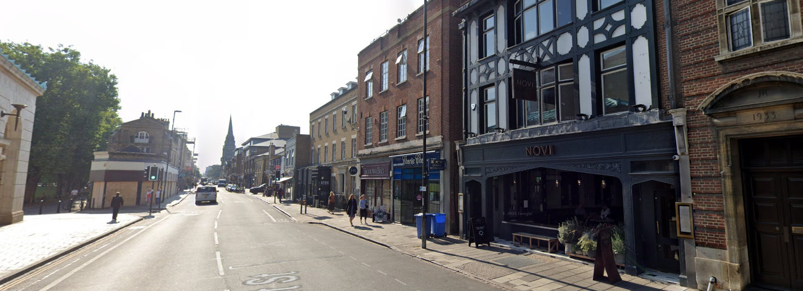

Restaurant infomation

>
These restaurant are the staples of there represented cuisine, if you are to visiting Cambridge I highly recommend
that you visit one of these restaurants listed down below.
If you are interested, the infomation of the restaurant
is listed below including name, cuisine, address, phone number and rating. These should allow
you to book and browse potential restaurants
without prior knowledge of cambridge.
>
| Restaurant_id | Name | Cuisine | Address | Phone Number | Rating |
|---|---|---|---|---|---|
| 1 | Browns Cambridge | British | 23 Trumpington St | 01223 461655 | 4.1 | 2 | Yim Wah Express | Chinese | 2-4 Lensfield | 01223 309530 | 4.4 | 3 | NOVI | European | 12 Regent St | 01223 518537 | 3.9 | 4 | The Catch | Fish & Chips | 12 Burleigh St | 01223 229962 | 4.0 | 5 | Uncle Franks | Hamburger | Market street | 01223 200388 | 3.5 | 6 | The Tiffin Truck | Indian | 22 Regent St | 01223 366111 | 4.4 | 7 | Zizzi | Italian | 47 Regent St | 01223 660082 | 3.8 |